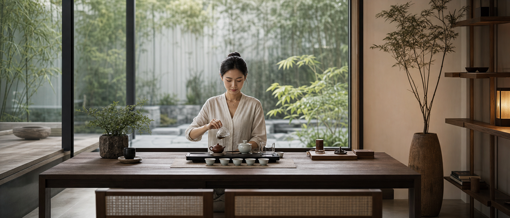
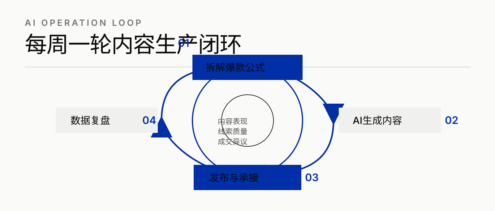
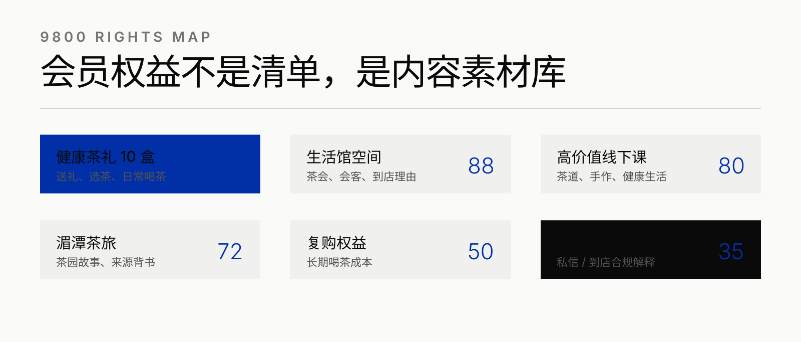
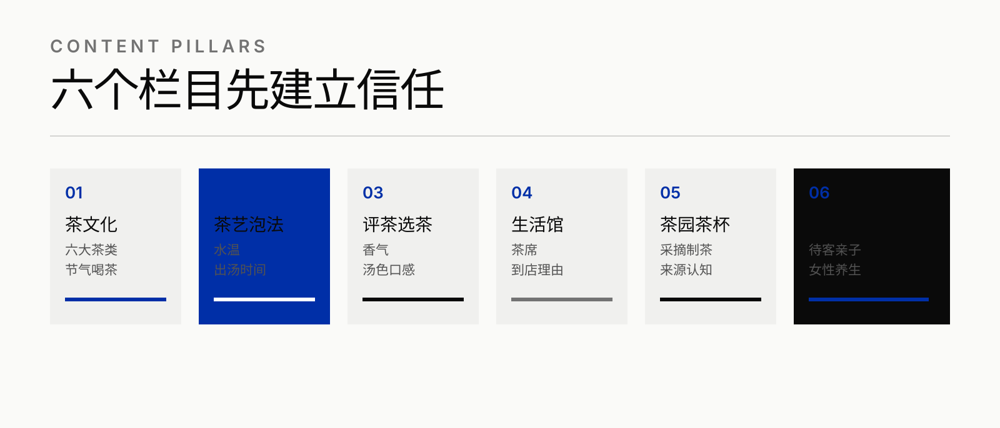
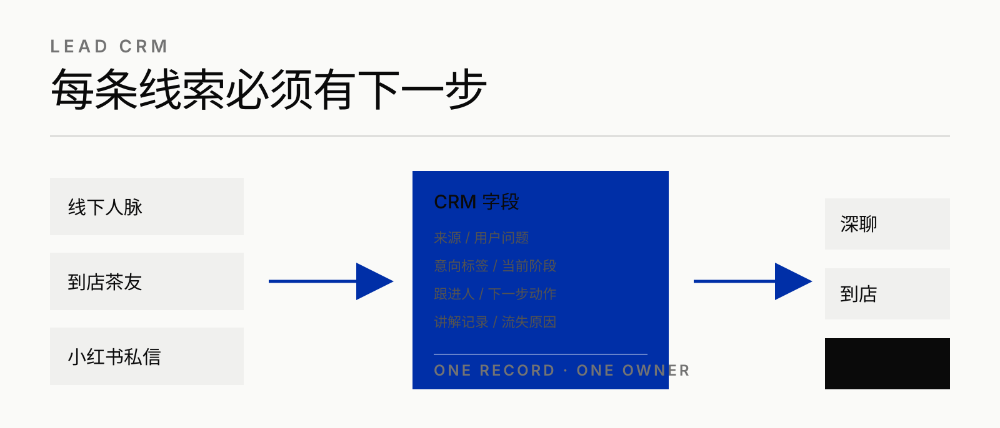
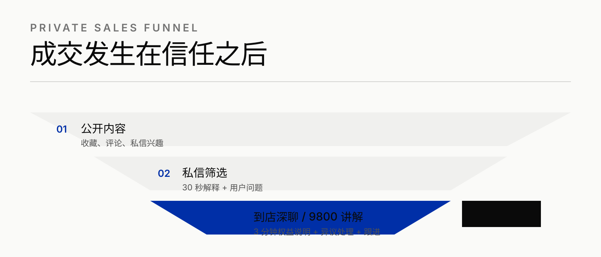
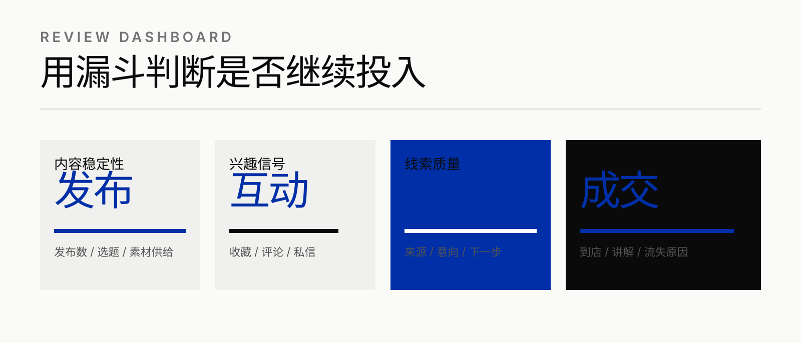
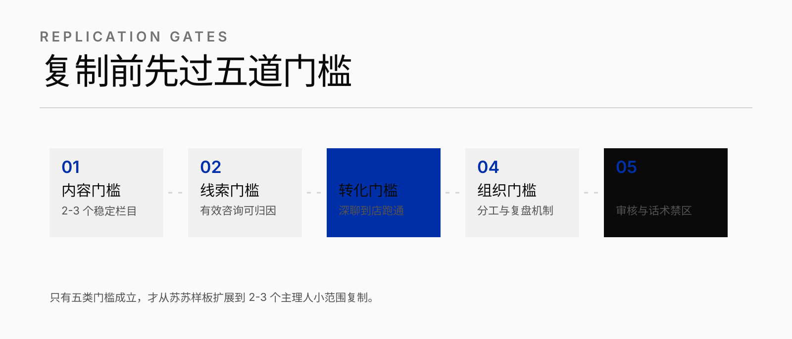

01
茶文化入门
六大茶类、节气喝茶、茶礼礼仪，降低关注门槛。

降低机构官方表达风险
让线下转化有场景承接
内容服务深聊与到店
从 0 账号开始，先把苏苏作为真实主理人的可信度立住，再让会员权益自然进入用户场景。
对外不作为机构官方代表，降低风险，聚焦个人 IP。
内容用于线下人脉背书，同时测试新增线上线索。
不把 3980 茶旅、69800 茶园主或 AI 课程作为第一阶段独立销售目标。
苏苏从零开始，第一阶段不以成熟博主数据验收，而以账号可信度、内容资产、线索记录和成交承接为核心证据。







每张图对应一个交付物或运营动作，后续可单独截取用于方案汇报、执行培训和项目复盘。
分析茶叶、茶旅、课程类小红书内容，提炼标题、结构、镜头和转化动作。
结合公司知识库、9800 权益和苏苏口吻，产出选题、文案、标题、逐字稿。
每条内容配置评论、私信、收藏或到店动作，不在公开内容里硬卖会员。
把点赞、收藏、评论、私信和成交异议反向输入下一周内容日历。
输出分阶段方案、内容模板、CRM 字段、复盘机制和复制门槛。
提供茶文化、生活馆场景、基础出镜和用户咨询反馈。
负责每周日历、发布节奏、评论私信记录和素材归档。
用统一口径完成私信解释、到店讲解、异议处理和跟进归因。
目标清晰，内容、线索、私信、到店和复盘才不会发散。
权益是素材库，不是销售清单；先让用户看懂茶、空间和生活方式。
只有内容、线索、转化、组织和合规门槛成立，才复制到更多主理人。